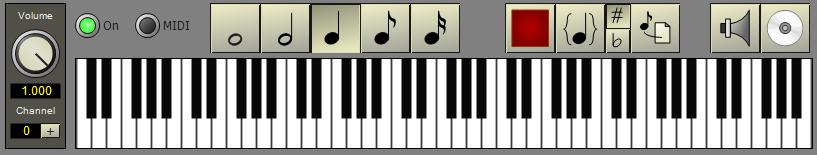

The keyboard at the bottom of the main window allows you to play notes on any configured instrument. In addition, the keyboard can record the notes played and copy them to the clipboard in Notelist score format.
When the keyboard is active it must constantly send output to the computer sound card, even if you are not actually playing notes. This consumes processor time and memory unecessarily. In addition, the keyboard and sequencer share the same instruments, mixer and wave file output modules, and both cannot be active at the same time. For these reasons, the keyboard is not automatically started when you open a project. When you want to play sounds, press the "On" button above the keyboard. Note: The first time you start the keyboard there might be a slight delay while the system opens and prepares the sound card. If you start the sequencer, or reconfigure the mixer, the keyboard will automatically turn off.
When a MIDI device is connected to the computer, the MIDI light will be available. Click on the lamp to enable/disable receiving events from the MIDI keyboard.
A list to the left of the keyboard shows all currently available instruments. In order to play the keyboard, you must select one of the instruments. When an instrument editor is activated, it will automatically switch the instrument selection to itself.
You can control the volume level of the keyboard independently of the mixer. Normally, the volume level can be left set to 1.0 since all sounds played on the keyboard are sent through a mixer channel. The volume control is added in order to emulate the volume keyword in a Notelist score.
The currently selected mixer channel is shown below the volume control. Press the + button to increment the mixer channel number. The number will wrap around when you reach the maximum mixer channel number. Selecting different mixer channels allows you to hear how the mixer affects the sound.
The virtual keyboard simulates MIDI note-on velocity using the position of the mouse when a key is clicked. When the mouse position is at the bottom edge of the key, a maximum velocity of 127 is set for the note. The velocity value decreases as the mouse position is moved up from the bottom edge of the key.
Normally when you play on the keyboard, the sound will last until you release the key. However, some instruments can be configured with an envelope based on the current note duration. In that case, the keyboard must supply a duration to the instrument whenever a note is played. The five buttons with notes on them allow selecting a different note duration. The effective tempo is 120bpm, thus a quarter note represents 1/2 second duration. The duration buttons are also used during recording to indicate the actual length of a note.
Note: Recording is only available from the virtual keyboard. MIDI events are not currently recorded.
The record controls are to the right of the note buttons. The first button (red in color) switches the record function on and off. When record is on, each note you play is added to a buffer. Notes remain in the buffer until you press the Copy button.
The group button (braces with a note in them) toggles the format of the Notelist output. When the group button is up, each note is placed on a separate line. When the group button is down, notes are written using the Notelist phrase notation (notes inside braces).
The sharps and flats buttons control how enharmonic equivalents are represented.
The copy button (note -> page) copies the current record buffer to the clipboard and then clears the buffer. You can then switch to a Notelist editor and use the paste function to copy the notes into the score. Since the information is left on the clipboard, you can copy the notes as many times as you want, and also copy the notes into any other text editor on your computer.
The speaker and disk buttons are used to start the sequencer. Unlike the menu and toolbar equivalents, these buttons automatically start the sequencer and close the popup form when it is finished. This allows for a quick preview of the score. The last set start and end times from the generator form are reused. Thus, you can open the sequencer using the project menu, set the start and end times, then close the form. As you work on the score, or change instruments, the speaker and disk buttons can be used to quickly audition the section of the composition you are working on.